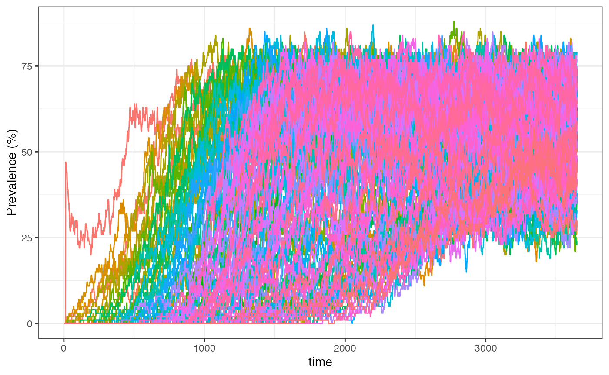
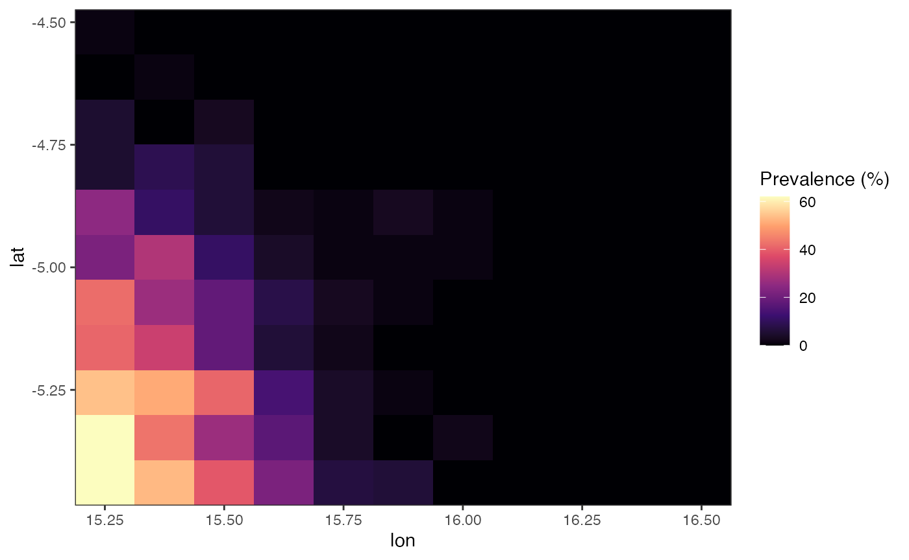
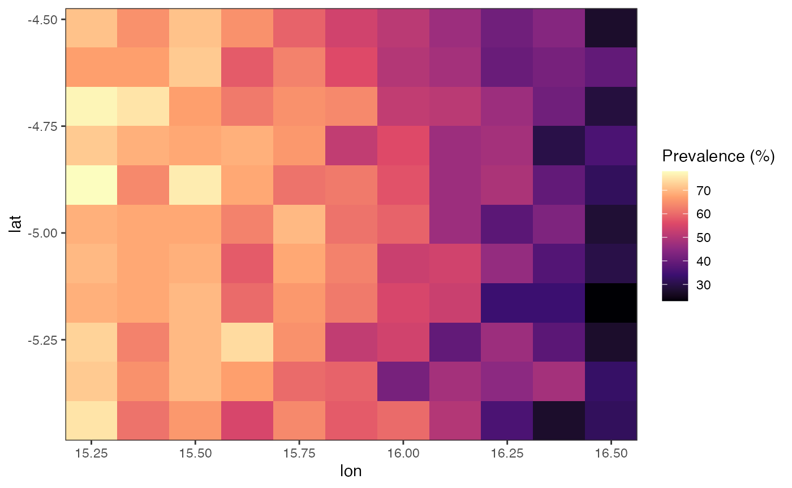
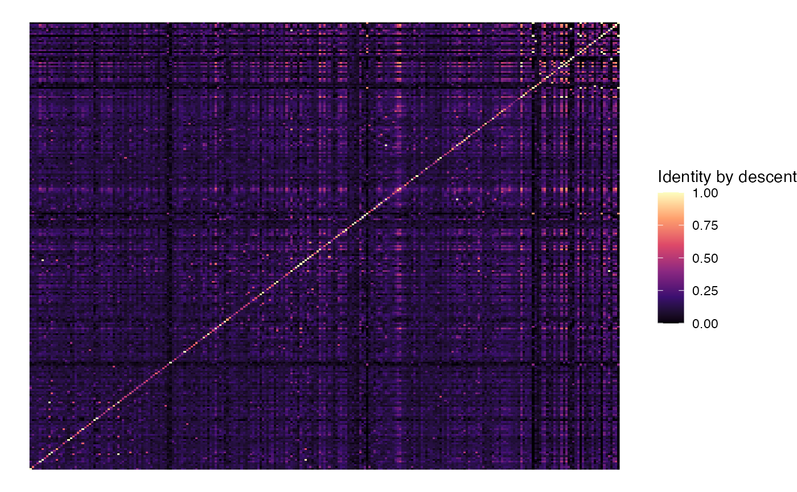
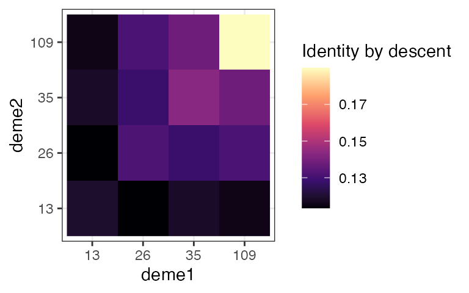
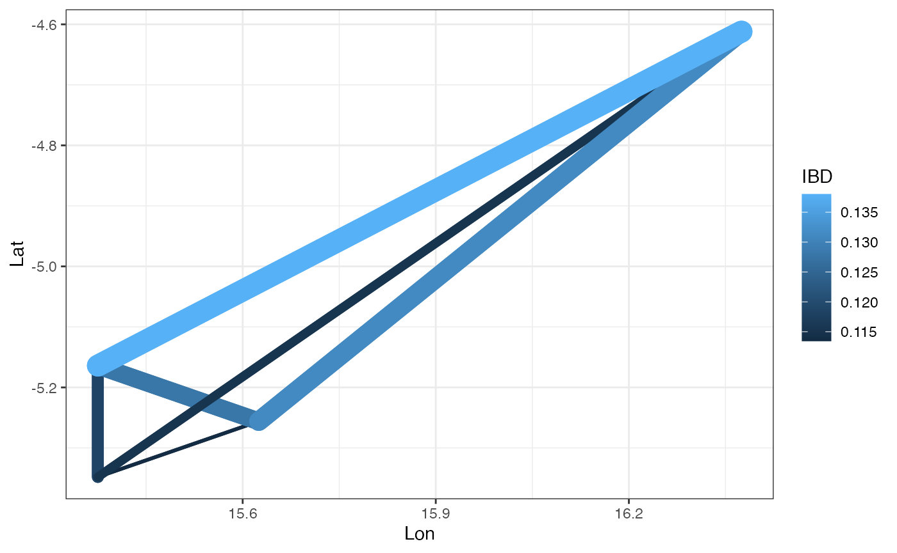

PlasmoSim contains a simple model of human movement. This tutorial covers:
Load necessary packages:
PlasmoSim incorporates migration of hosts between demes using a migration matrix. We have to be careful when simulating stochastic movement of people between demes, as if we simply give each person a random chance of moving from one deme to another taken from this migration matrix then population sizes will drift up and down at random and eventually we will see demes emptying entirely. To get around this we do matched migration, meaning people swap places between demes rather than moving independently. This satisfies the migration matrix, while also ensuring that population sizes stay constant throughout the simulation. We do not model mosquito movement in this version of the package.
We start by creating a grid of demes, and for each deme specifying its properties, such as the mosquito population size and the number of seeding infections. In our case we will make the density of mosquitoes (and hence the EIR) increase from left to right of the domain. Note that human population sizes must be the same for all demes due to the migration constraint described above.
We do not have to define the spatial locations of these demes - everything we need to know is essentially encoded in the migration matrix. However, it can be useful to give them lat/lon coordinates and then consider migration in a spatial context. We will start by seeding infections in just one deme in the lower left corner:
# define lat/lon coordinates of demes
deme_coords <- expand_grid(lat = seq(-5.44, -4.52, l = 11),
lon = seq(15.25, 16.50, l = 11))
n_demes <- nrow(deme_coords)
# add deme-specific properties
deme_coords <- deme_coords |>
dplyr::mutate(deme = 1:n_demes,
#M = round((lon - 15)*800), # mosquito population size increasing from left to right
M = round((18 - lon)*300), # mosquito population size increasing from left to right
seed_infections = ifelse(deme == 1, 50, 0))
head(deme_coords)
#> # A tibble: 6 × 5
#> lat lon deme M seed_infections
#> <dbl> <dbl> <int> <dbl> <dbl>
#> 1 -5.44 15.2 1 825 50
#> 2 -5.44 15.4 2 788 0
#> 3 -5.44 15.5 3 750 0
#> 4 -5.44 15.6 4 712 0
#> 5 -5.44 15.8 5 675 0
#> 6 -5.44 15.9 6 638 0Next we need to make a migration matrix. We first calculate the distance between all demes, and then we will create a small amount of migration between adjacent demes only. The migration matrix must sum to one over rows to be accepted by the program:
# define migration matrix based on distance
spatial_dist <- get_spatial_distance(lat = deme_coords$lat,
lon = deme_coords$lon)
mig_matrix <- ifelse(spatial_dist < 20, 0.001, 0)
# ensure migration probabilities sum to 1 over rows
diag(mig_matrix) <- 0
diag(mig_matrix) <- 1 - rowSums(mig_matrix)Next we need to define our sampling strategy. We will sample 100
individuals from a subset of demes after a full 10 years of simulation
(genetic patterns take a long time to settle down, much longer than
prevalence for example). For convenience we produce the sampling
data.frame directly from the deme_coords data.frame defined
above, although only the columns deme, time
and n will be used sampling.
# define output dataframe
sample_df <- deme_coords |>
dplyr::filter(deme %in% c(13, 26, 35, 109)) |>
dplyr::mutate(time = 10 * 365,
n = 100)
sample_df
#> # A tibble: 4 × 7
#> lat lon deme M seed_infections time n
#> <dbl> <dbl> <int> <dbl> <dbl> <dbl> <dbl>
#> 1 -5.35 15.4 13 788 0 3650 100
#> 2 -5.26 15.6 26 712 0 3650 100
#> 3 -5.16 15.4 35 788 0 3650 100
#> 4 -4.61 16.4 109 488 0 3650 100Now we can run the simulation, using the values in
deme_coords to specify the mosquito population size and the
seeding infections:
# simulate
set.seed(1)
sim_mig <- sim_falciparum(H = 100,
M = deme_coords$M,
seed_infections = deme_coords$seed_infections,
mig_matrix = mig_matrix,
L = 24,
sample_dataframe = sample_df)
#> Running simulation
#>
#> simulation completed in 3.59346 seconds
#> processing outputWe can now produce a simple plot of prevalence over time, broken down by deme. We can see how the wave of infection swept through the demes as infected hosts migrated through the space:
# basic plot of prevalence in "I" state (infected)
sim_mig$daily_values |>
dplyr::filter(time < 365 * 10) |>
ggplot() + theme_bw() +
geom_line(aes(x = time, y = 100 * I / 100, col = as.factor(deme)), show.legend = FALSE) +
ylab("Prevalence (%)")
We can visualise this spatially by filtering to a certain time point and then producing a raster plot. For example, here is the prevalence map 2 years into the simulation:
# subset daily output to specific timepoint and merge back with deme properties
daily_values_sub <- sim_mig$daily_values |>
dplyr::filter(time == 2*365) |>
dplyr::left_join(deme_coords, by = "deme")
# produce raster plot
daily_values_sub |>
ggplot() + theme_bw() +
geom_raster(aes(x = lon, y = lat, fill = I)) +
scale_x_continuous(expand = c(0, 0)) +
scale_y_continuous(expand = c(0, 0)) +
scale_fill_viridis_c(option = "magma", name = "Prevalence (%)")
We can see that 2 years into our simulation the wave of infection had still not quite reached the top of our domain. Prevalence also appears to be higher towards the left of the domain, a consequence of assuming increasing mosquito population size from right to left. We can produce the same plot at 10 years into simulation:
# subset daily output to specific timepoint and merge back with deme properties
daily_values_sub <- sim_mig$daily_values |>
dplyr::filter(time == 10*365) |>
dplyr::left_join(deme_coords, by = "deme")
# produce raster plot
daily_values_sub %>%
ggplot() + theme_bw() +
geom_raster(aes(x = lon, y = lat, fill = I)) +
scale_x_continuous(expand = c(0, 0)) +
scale_y_continuous(expand = c(0, 0)) +
scale_fill_viridis_c(option = "magma", name = "Prevalence (%)")
Now prevalence appears to be roughly at equilibrium, with higher transmission along the left of the domain.
Returning to our genetic sample, we asked the program to draw 100 individuals at random from four demes on the final day of simulation. We can calculate the pairwise genetic identity between all pairs of individuals in this sample using the function. Genetic identity is calculated as the proportion of identical genetic values over all possible pairs of haplotypes compared between two individuals. This means two individuals will only have identity = 1 if they are monoclonal and matching at every locus. It follows that an individual will be less than perfectly identical with itself if it carries multiple distinct haplotypes.
As long as genetic values represent ancestry, as they do in this simulation, what we are really measuring here is average identity by descent (IBD) between haplotypes. If genetic values were converted into alleles prior to running this function then we would be measuring identity by state (IBS).
# get pairwise genetic identity between all individuals
indlevel_identity <- get_identity_matrix(sim_mig, deme_level = FALSE)
# get into long form dataframe
n_pos <- nrow(indlevel_identity[[1]])
df_indlevel_identity <- expand_grid(samp1 = 1:n_pos, samp2 = 1:n_pos)
df_indlevel_identity$value <- as.vector(indlevel_identity[[1]])
# plot pairwise matrix
ggplot(df_indlevel_identity) + theme_void() +
geom_raster(aes(x = samp1, y = samp2, fill = value)) +
scale_fill_viridis_c(option = "magma", name = "Identity by descent")
We can also use the same function to summarise genetic identity at
the deme level rather than the individual level through the
deme_level = TRUE argument:
# get pairwise genetic identity between all demes
deme_level_identity <- get_identity_matrix(sim_mig, deme_level = TRUE)
# get into long form data.frame
n_deme <- nrow(deme_level_identity[[1]])
df_deme_level_identity <- expand_grid(deme1 = sample_df$deme, deme2 = sample_df$deme)
df_deme_level_identity$IBD <- as.vector(deme_level_identity[[1]])
# plot pairwise matrix
ggplot(df_deme_level_identity) + theme_bw() +
geom_raster(aes(x = as.factor(deme1), y = as.factor(deme2), fill = IBD)) +
xlab("deme1") + ylab("deme2") +
scale_fill_viridis_c(option = "magma", name = "Identity by descent")
We can see that some demes are more closely related than others. We can visualise this spatially by drawing edges between our sampled demes, with edge thickness/colour proportional to IBD:
# append deme coordinates
sample_df_simple <- sample_df |>
dplyr::select(lat, lon, deme)
df_deme_level_identity <- df_deme_level_identity |>
dplyr::rename(deme = deme1) |>
dplyr::left_join(sample_df_simple, by = "deme") |>
dplyr::rename(deme1 = deme,
deme = deme2) |>
dplyr::left_join(sample_df_simple, by = "deme") %>%
dplyr::rename(deme2 = deme)
# plot pairwise IBD
df_deme_level_identity |>
dplyr::filter(deme1 != deme2) |>
ggplot() + theme_bw() +
geom_segment(aes(x = lon.x, y = lat.x, xend = lon.y, yend = lat.y, size = IBD, col = IBD),
lineend = "round") +
xlab("Lon") + ylab("Lat") +
guides(size = "none")
#> Warning: Using `size` aesthetic for lines was deprecated in ggplot2 3.4.0.
#> ℹ Please use `linewidth` instead.
#> This warning is displayed once every 8 hours.
#> Call `lifecycle::last_lifecycle_warnings()` to see where this warning was
#> generated.
On average we would expect to see that demes closer together would be more highly related, although this will also be influenced in complex ways by relative transmission intensity.